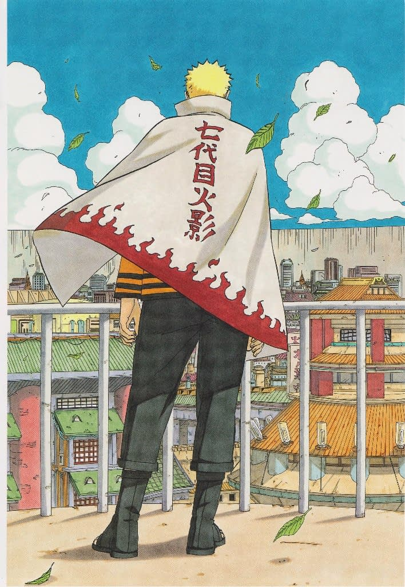

The most popular manga according to readers
1
Attack on Titan (進撃の巨人)
Hundreds of years ago, terrifying monsters appeared that looked somewhat like humans. These mindless, towering giants, called titans, proved to be a threat to life as they devoured any human they could find to satisfy their insatiable appetite. Unable to resist these creatures, humans built gigantic walls to enclose what was left of humanity.
2
Tokyo Ghoul (東京喰種)

In a world where the facets of humanity and eerie mystery are mixed, there is an ancient species - ghouls. They don't just look for food in people, but feed on their flesh and souls. However, most ghouls strive to keep a spark of humanity in themselves, even if it means living in constant danger.
3
Berserk (ベルセルク)
![Berserk is a dark fantasy manga series written and illustrated by Kentaro Miura. First serialized in 1989, Berserk is renowned for its mature, violent, and deeply philosophical storytelling, as well as its intricate artwork. The series is set in a medieval-inspired world, filled with brutal battles, supernatural elements, and heavy psychological and emotional themes. Over the years, Berserk has become one of the most influential and critically acclaimed manga, though Miura's sudden passing in 2021 left the series incomplete.](https://kuvernoori.github.io/Anime-site-test/berserkmanga.jpg)
Guts was born from the hanged corpse of his mother and raised as a mercenary by his abusive adoptive father, Gambino, following the death of his adoptive mother, Shisu. After being forced to kill Gambino in self-defense, Guts fled his mercenary group and became a wandering mercenary.
4
Land of the Lustrous (宝石の国)

Land of the Lustrous is set in a far, distant future where the Earth had been struck six times by meteorites, ravaging it in the process. All of the remaining land was reduced to a single coast, and nearly all life was destroyed. Over vast stretches of time, a new race of sentient lifeforms emerged; immortal jewels that take the form of people.
5
Naruto (ナルト)

On Naruto Uzumaki's birthday, the village of Konoha was attacked by a legendary demon, the Nine-Tailed Fox. The Fourth Hokage saved the village at the cost of his own life by sealing the demon within the newborn Naruto, unknowingly condemning him to a life of hatred among his fellow villagers.
6
Monster (モンスタ)
Dr. Kenzo Tenma is a talented Japanese surgeon living in Europe with his beautiful fiancée. One of the brightest young minds in his field, he is about to achieve a promotion at the hospital where he works. Everything changes when Kenzo is faced with one of the toughest dilemmas of his life - to save the life of a little boy or the mayor of the city.
7
The Horizon (지평선)
Two children meet unexpectedly in the midst of war. Fleeing the chaos, they come across a long, empty road. Without adults to rely on, the two strangers, now friends, walk alongside each other to see what lies at the end of the road. All hope lies in keeping moving forward. What trials and tragedies await them on their journey to survival?
8
Death Note (宝石の国)
Light Yagami is a model 17-year-old high school student whose exam scores are at the top of the rankings in all of Japan. While sitting in class, he notices something falling outside the window. During recess, he picks up the mysterious object and it turns out to be a black notebook with the inscription "Death Note". Inside were instructions for use: "The person whose name is written in the notebook will die." Having his own views on the punishment system, Light decides to establish his own justice, using the notebook to "cleanse" the world of evil - to kill criminals.